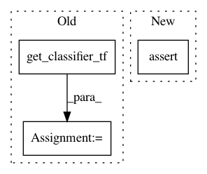

e06fa429553cd8a183f4fe57ea07e311b4f6ef4e,tests/classifiers/test_tensorflow.py,TestTensorFlowClassifier,test_repr,#TestTensorFlowClassifier#,251
Before Change
sess.close()
def test_repr(self):
classifier, sess = get_classifier_tf()
repr_ = repr(classifier)
self.assertIn("art.classifiers.tensorflow.TensorFlowClassifier", repr_)
self.assertIn("channel_index=3, clip_values=(0, 1)", repr_)
self.assertIn("defences=None, preprocessing=(0, 1)", repr_)
After Change
else:
self.assertIn("TensorFlowClassifier", repr_classifier)
self.assertIn("input_ph=<tf.Tensor \"Placeholder:0\" shape=(?, 28, 28, 1) dtype=float32>", repr_classifier)
self.assertIn("output=<tf.Tensor \"Softmax:0\" shape=(?, 10) dtype=float32>", repr_classifier)
self.assertIn("labels_ph=<tf.Tensor \"Placeholder_1:0\" shape=(?, 10) dtype=int32>", repr_classifier)
self.assertIn("train=<tf.Operation \"Adam\" type=NoOp>", repr_classifier)
self.assertIn("loss=<tf.Tensor \"Mean:0\" shape=() dtype=float32>", repr_classifier)
self.assertIn("learning=None", repr_classifier)
In pattern: SUPERPATTERN
Frequency: 3
Non-data size: 3
Instances
Project Name: IBM/adversarial-robustness-toolbox
Commit Name: e06fa429553cd8a183f4fe57ea07e311b4f6ef4e
Time: 2020-01-15
Author: beat.buesser@ie.ibm.com
File Name: tests/classifiers/test_tensorflow.py
Class Name: TestTensorFlowClassifier
Method Name: test_repr
Project Name: IBM/adversarial-robustness-toolbox
Commit Name: e06fa429553cd8a183f4fe57ea07e311b4f6ef4e
Time: 2020-01-15
Author: beat.buesser@ie.ibm.com
File Name: tests/classifiers/test_tensorflow.py
Class Name: TestTensorFlowClassifier
Method Name: test_set_learning
Project Name: IBM/adversarial-robustness-toolbox
Commit Name: e06fa429553cd8a183f4fe57ea07e311b4f6ef4e
Time: 2020-01-15
Author: beat.buesser@ie.ibm.com
File Name: tests/classifiers/test_tensorflow.py
Class Name: TestTensorFlowClassifier
Method Name: test_predict